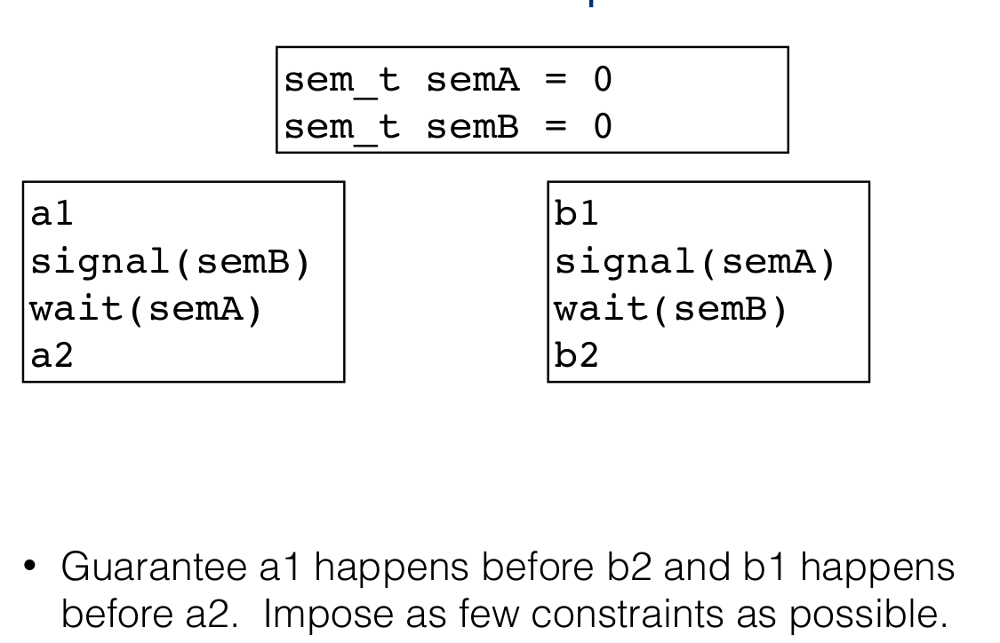

Semaphores
Abstract data types that provide synchronization. Semaphore is an alternative to locks.
A semaphore is an integer counting variable that has 2 atomic operations: wait and signal
Semaphores include:
-
Integer counter variable(semaphore value), that can only be accessed through 2 atomic operations. Semaphore value represents number of threads that can pass through wait before it blocks
-
Atomic operation wait(also called P or decrement).
Blocks while semaphore counter <= 0 and then decremenets counter
- Atomic operation signal(also called V or increment)
Increment the counter, unblock a waiting thread if there are any.
Definitions of atomic operations
these are definitions not implementations
wait(sem){ while(sem <= 0); // keeps executing as long as sem <= 0. sem -- // sem here is 0+, and its decremented. } signal(sem){ sem++; }
Types of semaphores
-
Binary(Mutex) Semaphore is the most common:
count = 0/1 -
Allow only 1 thread into CS
-
Mutual exclusion to critical section
-
Counting semaphore(max n threads allowed in CS, where
count = n) -
Great for a resource which allows certain kinds of unsynchronized concurrent access(e.g reading)
Atomicity of wait() and signal()
-
wait()andsignal()are atomic, meaning that they execute in one go, i.e they will not be interrupted whilst executed. -
To implement them, can use:
-
lower-level primitives
-
uniprocessor: disable interrupts or use hardware instructions
-
multiprocessor: use hardware instructions
Example
typedef struct account { double balance; semaphore S; } account_t; Withdraw(account_t *acct, amt){ double bal; wait(acct->S); bal = acct->balance; bal = bal - amt; acct->balance = bal; signal(acct->S); return bal; }
Note: note that we're returning bal instead of acct->balance. This is because we should never touch shared variables outside of a critical section, even for reading, because they might have already been changed. Instead return the local variable bal, which you know gives accurate result.
Semaphors Advantages and disadvantages
-
Advantage: A semaphor's value can be modified by any thread. In comparison, a lock has an "owner" and can be released only by its owner.
-
Advantage: Semaphor can impose an order of behaviour between threads. That's not possible with locks.

If you want to impose order of a first then b, make code
waitbefore b on a semaphore that increases ONLY AFTER a is passed.
- Disadvantage: Has a conditional variable which is very basic(
if count == 0 -> sleep). We may want a more complex wait condition.
Producers/Consumers with Semaphors
//globals // mutex for writing/reading from bugger mutex = 1 // semaphor for how many pieces you can read reads_allowed = 0 // semaphor for how many pieces can be written at the same time writes_allowed = N Producer { // allow to write only if there is space(i.e if writes_allowed > 0) sem_wait(writes_allowed) // lock buffer sem_wait(mutex) add_to_buffer() sem_signal(mutex) // send to Consumer message that it's ready to consume +1 piece sem_signal(reads_allowed) } Consumer{ // only allow reads if they are possible(there are // pieces ready to be consumed) sem_wait(reads_allowed) // lock the buffer sem_wait(mutex) read_from_buffer() sem_wait(mutex) // allow +1 write sem_signal(writes_allowed) }
Reader/Writer with Semaphors
from Wikipedia: Suppose we have a shared memory area (critical section). It is possible to protect the shared data behind a mutual exclusion mutex, in which case no two threads can access the data at the same time, specifically we don't want a writer and reader accessing it at the same time, or 2 writers, but we're ok with 2 readers accessing it. Reader R2 should be allowed to read the resource alongside R1 because reads don't modify data, so concurrent reads are safe. This is the motivation for the first readers-writers problem, in which the constraint is added that no reader shall be kept waiting if the share is currently opened for reading. This is also called readers-preference, with its solution:
// Globals int readcount = 0 // number of readers semaphore resource = 1; semaphore mutex = 1; Writer { // can't read and write to data at the same time sem_wait(resource); write(); sem_signal(resource); } Reader { // remember that readcount is a shared variable, therefore multiple variables may be able to modify it at the same time sem_wait(mutex) reacount +=1; if(readcount == 1){ //only need to lock it once, and lock it the first time a reader accesses it sem_wait(resource); } sem_signal(mutex) read; sem_wait(mutex) readcount -=1; if(readcount == 0){// once the last reader inside has finished reading, then you can release the lock and a write or another read can grab it. sem_signal(read_or_write) } sem_signal(mutex) }
TODO: Read Complete Reader/Writer